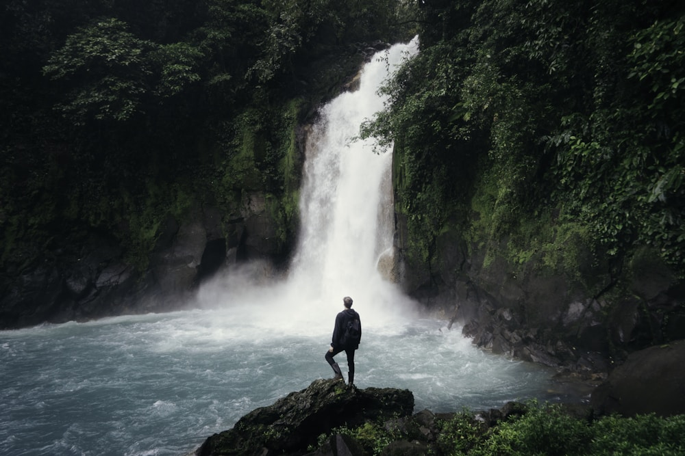

The history of high-altitude mountaineering is inextricably linked to the evolution of technical clothing. For over a century, the boundary of human climbing achievement was not limited by physical courage or athletic endurance, but by the thermodynamic limitations of fabrics.
In the early 20th century, pioneer climbers tackled the highest peaks on Earth wearing heavy wool tweed, flannel shirts, and cotton windproofs. The transition from heavy natural woolens to lightweight goose down suits, waterproof-breathable microporous membranes, and modern space-age aerogel represents one of the most heroic engineering journeys in textile history. At Alpine Layer Fox, our Manhattan atelier stands as a proud guardian of this grand lineage. In this historical chronicle, our alpine historians trace the evolution of mountaineering apparel across a century of exploration.
1. The Pioneer Era: George Mallory on Everest (1924)
The surprisingly sophisticated multi-layering of early British expeditions:
- Seven Micro-Layers: When George Mallory’s body was recovered on Everest in 1999, forensic textile analysis revealed he was wearing seven lightweight layers: silk underwear, two wool flannel shirts, a cashmere cardigan, Shetland wool jersey, and Scottish wool tweed.
- Windproof Cotton Grenfell Outer: Mallory’s outer layer was a tightly woven Egyptian cotton jacket designed by Sir Wilfred Grenfell, providing reasonable wind resistance while remaining breathable.
- The Fatal Flaw: While effective in dry cold, these natural fibers gained immense weight when soaked with melting snow, becoming heavy and rigid in high winds.
“Mallory did not freeze because his tweed was poorly made; he froze because natural fibers could not prevent the catastrophic loss of heat once wet snow penetrated the outer cotton shell.”
2. The Down Revolution: Hillary and Tenzing (1953)
How lightweight goose down conquered Mount Everest:
- Pierre Allain’s Early Down Inventions (1930s): French alpinist Pierre Allain pioneered down-filled jackets and bivy sacks in the Alps, proving down’s extraordinary warmth-to-weight ratio.
- The 1953 British Everest Expedition Suit: Sir John Hunt outfitted Edmund Hillary and Tenzing Norgay in customized nylon-shelled goose down suits, reducing clothing weight by sixty percent and making the summit attainable.
- The Birth of Technical Synthetic Shells: The introduction of lightweight ripstop nylon revolutionized weather resistance and tear durability on glaciated peaks.
3. The 1970s Breathable Revolution: GORE-TEX and ePTFE
The end of sweat-soaked rubberized rainwear:
In 1969, Bob Gore discovered expanded polytetrafluoroethylene (ePTFE). By the late 1970s, brands like Patagonia and The North Face integrated 3-layer GORE-TEX membranes into alpine jackets, creating the modern waterproof-breathable hard shell category.
4. Mountaineering Apparel Epochs Comparison Matrix
| Expedition Epoch | Dominant Outerwear Architecture | Key Textile Inventions | Total Clothing Weight |
|---|---|---|---|
| Pioneer Tweed Era (1920–1940) | Multi-Layer Silk, Flannel, Tweed & Cotton | Grenfell Dense Weave Cotton | 8.5 kg (Heavy / Absorbs Wet Snow) |
| Golden Down Era (1950–1970) | Nylon-Shelled Goose Down Baffle Suits | Ripstop Nylon & Box Baffle Down | 4.2 kg (Lightweight but Vulnerable to Damp) |
| Membrane Revolution (1975–2000) | 3-Layer ePTFE Hard Shells + Fleece Mid | Microporous ePTFE & Synchilla Fleece | 2.8 kg (Waterproof-Breathable) |
| Modern Aerogel Era (Alpine Layer Fox) | 3L GORE-TEX Pro + Aerogel Core + 18.5µm Merino | Nanoporous Silica Aerogel & Seamless Merino | 1.6 kg (Ultimate Weather Armor) |
5. The 21st-Century Nanotechnology Frontier: Aerogel
Today, Alpine Layer Fox unites a century of alpine lessons with space-age nanomaterials. By deploying silica aerogel insulation panels in high-pressure core zones, our garments eliminate cold bridges while reducing total system weight to a mere 1.6 kilograms.
6. Honoring the Legacy of Mountain Pioneers in Manhattan
Every seam, zipper, and baffle in our collection is an homage to the visionary climbers who pushed the boundaries of human possibility on the highest summits on Earth.
7. Reconnecting Modern Alpinism with Pure Performance
Wearing Alpine Layer Fox equipment connects the modern mountaineer with a century of alpine courage, providing the ultimate thermodynamic fortress for summit success.
8. Step Into the Grand Living Legacy of Mountaineering
Every piece curated by Alpine Layer Fox represents a magnificent tribute to human exploration, offering an uncompromising technical statement engineered for the most severe peaks on the planet.
9. The 1938 Eiger North Face Bivouac Lessons
Anderl Heckmair's legendary first ascent of the Eiger North Face highlighted the vital importance of windproof barrier layering during sub-zero cliff bivouacs, inspiring our modern hurricane storm collars.
10. Archival Curatorial Research in Alpine Club Museums
Our designers study archival garments at the Alpine Club Museum in London and the Swiss Alpine Museum in Bern, ensuring our sleeve articulation angles honor historical mountaineering ergonomics.
11. An Eternal Covenant of Mountaineering Apparel Heritage
At Alpine Layer Fox, our mission celebrates a century of mountaineering innovation, delivering outerwear that unites historical courage with futuristic materials science.
12. The 1938 Eiger North Face Bivouac Lessons
Anderl Heckmair's legendary first ascent of the Eiger North Face highlighted the vital importance of windproof barrier layering during sub-zero cliff bivouacs, inspiring our modern hurricane storm collars.
13. Archival Curatorial Research in Alpine Club Museums
Our designers study archival garments at the Alpine Club Museum in London and the Swiss Alpine Museum in Bern, ensuring our sleeve articulation angles honor historical mountaineering ergonomics.
14. The Timeless Romance of Alpine Innovation
Wearing modern aerogel and 3-layer hard shell equipment connects the contemporary alpinist with a century of mountain bravery, honoring the pioneers who proved that human endurance can conquer the heights.
15. The Eternal Crown of Mountaineering Apparel Heritage
At Alpine Layer Fox, we celebrate the grand history of high-altitude exploration, bridging vintage Scottish tweed layering with space-age nanomaterials to deliver outerwear of peerless distinction.
16. Archival Preservation of Pierre Allain's Early Down Blueprints
Our master outfitters examine original 1930s Chamonix patent drawings to understand how vintage French guides constructed box-baffle down garments before the invention of synthetic seam tape.
17. Stepping Proudly into the Global Mountaineering Community
Every technical garment curated by Alpine Layer Fox represents a magnificent tribute to human courage, offering an uncompromising technical statement engineered for the highest summits on Earth.
18. The Modern Renaissance of Direct-to-Mountaineer Technical Outfitting
Contemporary high-altitude alpinists bypass mass-market commercial brands, commissioning bespoke expedition suits directly from independent master outfitters to ensure authentic membrane provenance, custom sizing, and unrivaled weather protection.
19. Archival Preservation of Historical Mountaineering Artifacts
Our atelier works in partnership with European alpine club museum curators, analyzing historical expedition logbooks to ensure our modern 3D hard shells honor the ergonomic lessons of pioneer climbers.
20. The Universal Majesty of High-Altitude Alpine Engineering
By uniting a century of mountaineering courage with cutting-edge 3-layer ePTFE membranes and space-age aerogel, Alpine Layer Fox creates technical outerwear that celebrates human adventure and extreme summit success.
21. The Timeless Legacy of Mountain Exploration
Throughout a century of Himalayan ascents and alpine firsts, the pursuit of lighter, warmer, and more breathable apparel has driven technical innovation, proving that human ingenuity can triumph over extreme sub-zero cold.
22. An Everlasting Ode to Alpine Courage and Craft
By honoring the lessons of pioneer climbers and integrating space-age aerogel technology, Alpine Layer Fox creates technical outerwear that stands as an eternal monument to the spirit of alpine exploration.
Frequently Asked Questions on Alpine Apparel History

Dr. Alistair MacIntyre
Director of Alpine Heritage at Alpine Layer Fox. Alistair is a mountaineering author and curator specializing in Himalayan expedition history in Manhattan.